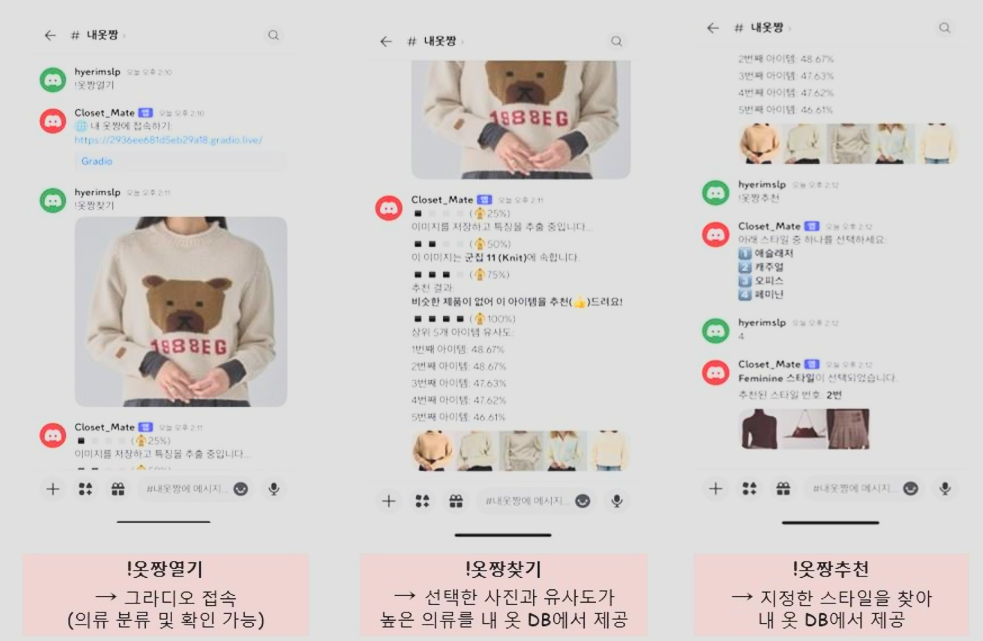

Research
Parametric Neural Networks Integration Dissertation

- Developed neural network-based approximation methods for Feynman integral calculations
- Reduced computational costs significantly compared to traditional methods
- Optimized for CERN LHC-like particle collision experiments
Deep Learning
PyTorch
Physics
View on GitHub
DINOv2 Backbone with TensorRT acceleration for Non-Destructive Inspection System Demo

- Automated defect detection system using X-ray imagery
- Implemented LBP and advanced image preprocessing
- TensorRT optimization for real-time inference
Computer Vision
TensorRT
CUDA
View on GitHub
Portfolio
Scouter - AI Vision Analysis Assistant Platform
- AI-powered sports analysis platform for player performance tracking
- Real-time pose estimation and movement analysis
- Advanced statistics and performance metrics visualization
Computer Vision
PyTorch
FastAPI
React
View on GitHub
JobPT - AI Job Searching Assistant
- AI-powered interview preparation platform
- Real-time feedback on interview responses
- Personalized interview question generation
NLP
Django
React
OpenAI API
View on GitHub
Closetmate - AI Fashion Assistant

- AI-powered fashion recommendation system
- Personal wardrobe management and styling suggestions
- Image-based fashion item recognition
Computer Vision
Flask
Vue.js
AWS
View on GitHub
Knowledge
Model Optimization Research
- Model optimization research using OpenAI's O1 model
- Chain of Thought (CoT) based agent systems
- Innovative sequential code execution approach
AI Optimization
PyTorch
CUDA
View on GitHub